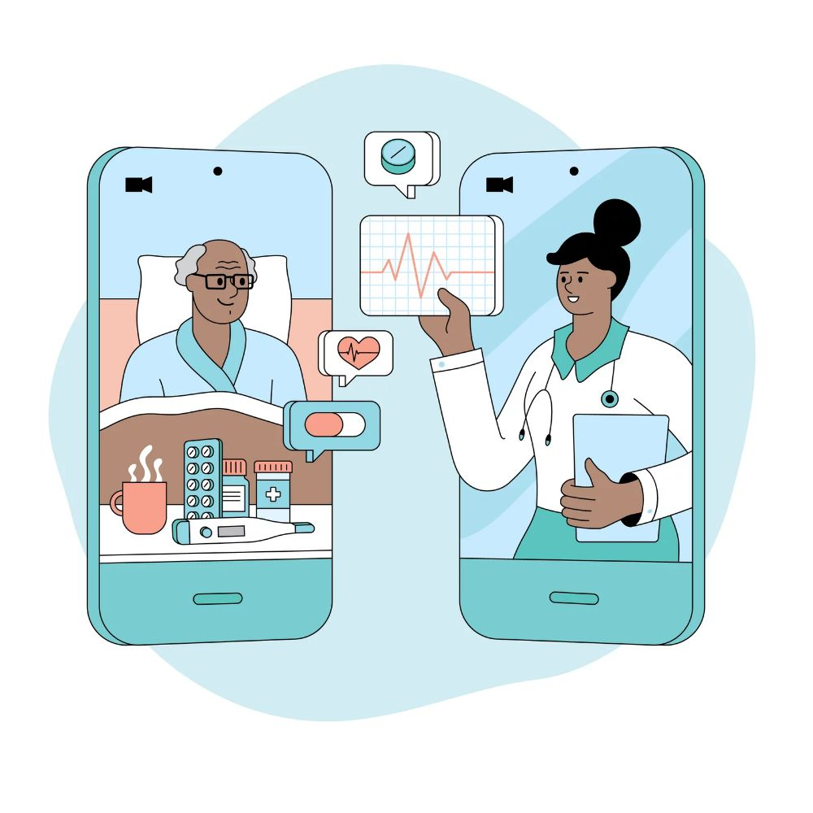
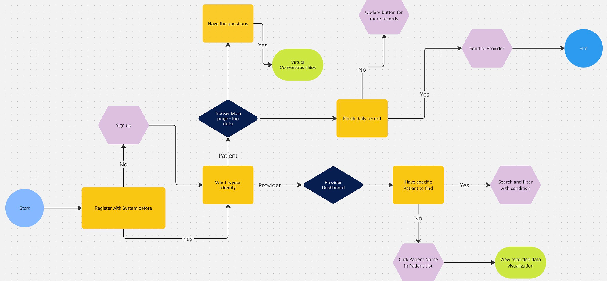
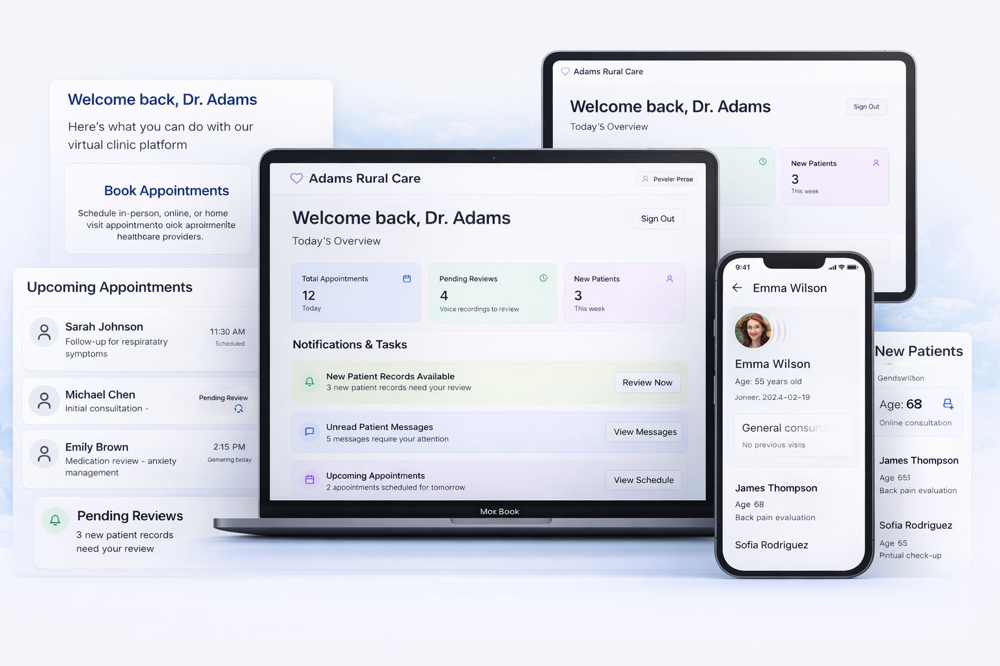
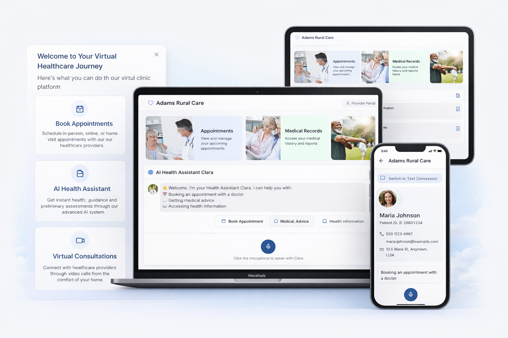

AI + HealthcareAccessibilityProduct Design10-Week Capstone
Virtual Rural Healthcare Clinic
Designing AI-powered access to geriatric care in rural communities.
Role
UX/UI Designer · Researcher · Project Lead · Frontend Dev
Timeline
Spring 2025 · 10 Weeks
Team
2 People
Tools
Figma · React · OpenAI API · Lovable AI
Overview
Improving healthcare accessibility for elderly patients in Adams County, WA through AI, voice interaction, and simplified UX. Over 10 weeks, my team of two designed and prototyped a two-sided virtual care platform connecting rural elderly patients with providers — addressing geographic isolation, digital exclusion, and chronic care management gaps in one of Washington's most underserved counties.
The Problem
Rural elderly patients are left out of digital healthcare. We focused on rural communities in Washington State, where access to healthcare remains uneven due to geographic and resource constraints. After scoping the problem, we narrowed to Adams County — a representative rural region with significant healthcare access challenges.
Why Adams County?
Provider shortage: Limited healthcare facilities and specialists force residents to travel long distances for care.
Aging population: A growing proportion of residents are aged 65+, increasing demand for chronic disease management and geriatric services.
Rural barriers: Transportation limitations, lower income levels, and limited broadband access further restrict healthcare access.
Healthcare disparities: Rural counties in Washington consistently show lower access to preventive care and higher unmet medical needs compared to urban areas.

"How might we design an accessible, AI-supported healthcare experience that enables elderly patients in rural areas to receive timely, continuous care despite limited local resources?"
User Research
We conducted heuristic evaluations and user interviews with elderly rural residents and healthcare providers to understand real pain points, existing behaviors, and trust barriers. Four key insights shaped our design direction:
01
Voice over typing
Users strongly preferred voice interaction — typing was a significant friction point for elderly users with limited digital experience or motor difficulties.
02
Concrete navigation labels
Abstract labels like "Dashboard" or "Portal" caused confusion. Users needed plain-language, task-oriented navigation to orient themselves.
03
Scheduling & video are high-friction
Booking appointments and joining video calls were the two highest-dropout moments. Both required multi-step flows users couldn't complete independently.
04
AI trust requires transparency
Users were willing to engage with AI assistance, but only when outputs were clearly explained and users felt in control of the interaction.
Design Process
After user research, we used Lovable AI to accelerate early-stage prototyping and UI exploration — generating initial layout structures and interface variations, then manually refining them in Figma for accessibility, clarity, and usability. This let us move quickly while keeping all design decisions human-centered and grounded in user needs.
1
Generate & Explore
Used Lovable AI to generate initial layout structures and explore multiple interface directions rapidly before committing to a direction.
2
Refine in Figma
Manually refined AI-generated outputs for accessibility, contrast, touch target sizing, and plain-language copy tailored to elderly users.
3
Test & Iterate
Ran multiple rounds of usability testing with target users, prioritizing scheduling, video visit, and AI triage flows.
4
Build with React
Implemented the validated prototype using React and OpenAI API integration to produce a functional, testable MVP.

The Solution — A Two-Sided Platform
The final design is a connected care system with two distinct experiences: an accessible patient-facing portal and a workflow-focused provider dashboard — both integrated through shared data and AI-powered insights.

Patient Side For Elderly Rural Residents
AI onboarding & triage → collects patient information and guides users through initial intake in plain language
LLM-powered medical Q&A → provides instant, easy-to-understand health guidance without requiring a scheduled visit
Voice-to-text assistant → enables hands-free interaction for low-tech users or those with motor difficulties
Appointment scheduling → simple, step-by-step booking and management with minimal cognitive load
Medical records access → allows patients to view reports and history in plain language
Medication management → reminders, refill requests, and educational support
Mental health support → AI-driven screening and resource recommendations
Provider Side For Rural Clinicians
Dashboard overview → quick view of appointments, tasks, and patient updates in one place
Appointment management → track upcoming consultations and patient status across the day
Patient record access → view medical history and intake information before and during visits
AI-assisted insights → analyze patient symptoms from voice and text inputs to support clinical decision-making
Voice recording review → listen to and evaluate patient-submitted recordings asynchronously
Report generation → document findings and follow-ups efficiently with AI drafting support
Task & notification system → prioritize pending reviews and patient needs

A connected care system that improves access for elderly rural patients while reducing friction for providers — meeting both sides where they are.
Outcomes & Reflection
✦
Functional MVP
Delivered a working React prototype with real OpenAI API integration, not just a static mockup.
✦
AI-accelerated workflow
Lovable AI + Figma iteration cycle significantly compressed prototyping time while maintaining design quality.
This project pushed me to balance competing constraints: clinical accuracy vs. plain-language simplicity, AI automation vs. user trust, and feature breadth vs. cognitive load for elderly users. Leading a two-person team as both designer and project lead taught me how to scope ruthlessly and ship a coherent experience under time pressure.